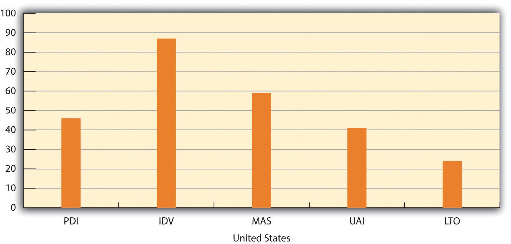

This chapter will take a closer look at how two key factors, culture and ethics, impact global business. Most people hear about culture and business and immediately think about protocol—a list of dos and don’ts by country. For example, don’t show the sole of your foot in Saudi Arabia; know how to bow in Japan. While these practices are certainly useful to know, they are just the tip of the iceberg. We often underestimate how critical local culture, values, and customs can be in the business environment. We assume, usually incorrectly, that business is the same everywhere. Culture does matter, and more and more people are realizing its impact on their business interactions.
CultureThe beliefs, values, mind-sets, and practices of a specific group of people., in the broadest sense, refers to how and why we think and function. It encompasses all sorts of things—how we eat, play, dress, work, think, interact, and communicate. Everything we do, in essence, has been shaped by the cultures in which we are raised. Similarly, a person in another country is also shaped by his or her cultural influences. These cultural influences impact how we think and communicate.
This chapter will discuss what culture means and how it impacts business. We’ll review a real company, Dunkin’ Brands, that has learned to effectively incorporate, interpret, and integrate local customs and habits, the key components of culture, into its products and marketing strategy.
High-tech and digital news may dominate our attention globally, but no matter where you go, people still need to eat. Food is a key part of many cultures. It is part of the bonds of our childhood, creating warm memories of comfort food or favorite foods that continue to whet our appetites. So it’s no surprise that sugar and sweets are a key part of our food focus, no matter what the culture. Two of the most visible American exports are the twin brands of Dunkin’ Donuts and Baskin-Robbins.
Owned today by a consortium of private equity firms known as the Dunkin’ Brands, Dunkin’ Donuts and Baskin-Robbins have been sold globally for more than thirty-five years. Today, the firm has more than 14,800 points of distribution in forty-four countries with $6.9 billion in global sales.
After an eleven-year hiatus, Dunkin’ Donuts returned to Russia in 2010 with the opening of twenty new stores. Under a new partnership, “the planned store openings come 11 years after Dunkin’ Donuts pulled out of Russia, following three years of losses exacerbated by a rogue franchisee who sold liquor and meat pies alongside coffee and crullers.”Kevin Helliker, “Dunkin’ Donuts Heads Back to Russia,” Wall Street Journal, April 27, 2010, accessed February 15, 2011, http://online.wsj.com/article/SB10001424052748704464704575208320044839374.html. Each culture has different engrained habits, particularly in the choices of food and what foods are appropriate for what meals. The more globally aware businesses are mindful of these issues and monitor their overseas operations and partners. One of the key challenges for many companies operating globally with different resellers, franchisees, and wholly owned subsidiaries is the ability to control local operations.
This wasn’t the first time that Dunkin’ had encountered an overzealous local partner who tried to customize operations to meet local preferences and demands. In Indonesia in the 1990s, the company was surprised to find that local operators were sprinkling a mild, white cheese on a custard-filled donut. The company eventually approved the local customization since it was a huge success.David Jenkins (former director, International Operations Development, Allied-Domecq QSR International Ltd.), interview with the author, 2010.
Dunkin’ Donuts and Baskin-Robbins have not always been owned by the same firm. They eventually came under one entity in the late 1980s—an entity that sought to leverage the two brands. One of the overall strategies was to have the morning market covered by Dunkin’ Donuts and the afternoon-snack market covered by Baskin-Robbins. It is a strategy that worked well in the United States and was one the company employed as it started operating and expanding in different countries. The company was initially unprepared for the wide range of local cultural preferences and habits that would culturally impact its business. In Russia, Japan, China, and most of Asia, donuts, if they were known at all, were regarded more as a sweet type of bakery treat, like an éclair or cream puff. Locals primarily purchased and consumed them at shopping malls as an “impulse purchase” afternoon-snack item and not as a breakfast food.
In fact, in China, there was no equivalent word for “donut” in Mandarin, and European-style baked pastries were not common outside the Shanghai and Hong Kong markets. To further complicate Dunkin’ Donuts’s entry into China, which took place initially in Beijing, the company name could not even be phonetically spelled in Chinese characters that made any sense, as Baskin-Robbins had been able to do in Taiwan. After extensive discussion and research, company executives decided that the best name and translation for Dunkin’ Donuts in China would read Sweet Sweet Ring in Chinese characters.
Local cultures also impacted flavors and preferences. For Baskin-Robbins, the flavor library is controlled in the United States, but local operators in each country have been the source of new flavor suggestions. In many cases, flavors that were customized for local cultures were added a decade later to the main menus in major markets, including the United States. Mango and green tea were early custom ice cream flavors in the 1990s for the Asian market. In Latin America, dulce de leche became a favorite flavor. Today, these flavors are staples of the North American flavor menu.
One flavor suggestion from Southeast Asia never quite made it onto the menu. The durian fruit is a favorite in parts of Southeast Asia, but it has a strong, pungent odor. Baskin-Robbins management was concerned that the strong odor would overwhelm factory operations. (The odor of the durian fruit is so strong that the fruit is often banned in upscale hotels in several Asian countries.) While the durian never became a flavor, the company did concede to making ice cream flavored after the ube, a sweetened purple yam, for the Philippine market. It was already offered in Japan, and the company extended it to the Philippines. In Japan, sweet corn and red bean ice cream were approved for local sale and became hot sellers, but the two flavors never made it outside the country.
When reviewing local suggestions, management conducts a market analysis to determine if the global market for the flavor is large enough to justify the investment in research and development and eventual production. In addition to the market analysis, the company always has to make sure they have access to sourcing quality flavors and fruit. Mango proved to be a challenge, as finding the correct fruit puree differed by country or culture. Samples from India, Hawaii, Pakistan, Mexico, the Philippines, and Puerto Rico were taste-tested in the mainland United States. It seems that the mango is culturally regarded as a national treasure in every country where it is grown, and every country thinks its mango is the best. Eventually the company settled on one particular flavor of mango.
A challenging balance for Dunkin’ Brands is to enable local operators to customize flavors and food product offerings without diminishing the overall brand of the companies. Russians, for example, are largely unfamiliar with donuts, so Dunkin’ has created several items that specifically appeal to Russian flavor preferences for scalded cream and raspberry jam.Kevin Helliker, “Dunkin’ Donuts Heads Back to Russia,” Wall Street Journal, April 27, 2010, accessed February 15, 2011, http://online.wsj.com/article/SB10001424052748704464704575208320044839374.html.
In some markets, one of the company’s brands may establish a market presence first. In Russia, the overall “Dunkin’ Brands already ranks as a dessert purveyor. Its Baskin-Robbins ice-cream chain boasts 143 shops there, making it the No. 2 Western restaurant brand by number of stores behind the hamburger chain McDonald’s Corp.”Kevin Helliker, “Dunkin’ Donuts Heads Back to Russia,” Wall Street Journal, April 27, 2010, accessed February 15, 2011, http://online.wsj.com/article/SB10001424052748704464704575208320044839374.html. The strength of the company’s ice cream brand is now enabling Dunkin’ Brands to promote the donut chain as well.
(AACSB: Ethical Reasoning, Multiculturalism, Reflective Thinking, Analytical Skills)
As the opening case about Dunkin’ Brands illustrates, local preferences, habits, values, and culture impact all aspects of doing business in a country. But what exactly do we mean by culture? Culture is different from personality. For our purposes here, let’s define personality as a person’s identity and unique physical, mental, emotional, and social characteristics.Dictionary.com, s.v. “personality,” accessed February 22, 2011, http://dictionary.reference.com/browse/personality. No doubt one of the highest hurdles to cross-cultural understanding and effective relationships is our frequent inability to decipher the influence of culture from that of personality. Once we become culturally literate, we can more easily read individual personalities and their effect on our relationships.
Culture in today’s context is different from the traditional, more singular definition, used particularly in Western languages, where the word often implies refinement. Culture is the beliefs, values, mind-sets, and practices of a group of people. It includes the behavior pattern and norms of that group—the rules, the assumptions, the perceptions, and the logic and reasoning that are specific to a group. In essence, each of us is raised in a belief system that influences our individual perspectives to such a large degree that we can’t always account for, or even comprehend, its influence. We’re like other members of our culture—we’ve come to share a common idea of what’s appropriate and inappropriate.
Culture is really the collective programming of our minds from birth. It’s this collective programming that distinguishes one group of people from another. Much of the problem in any cross-cultural interaction stems from our expectations. The challenge is that whenever we deal with people from another culture—whether in our own country or globally—we expect people to behave as we do and for the same reasons. Culture awareness most commonly refers to having an understanding of another culture’s values and perspective. This does not mean automatic acceptance; it simply means understanding another culture’s mind-set and how its history, economy, and society have impacted what people think. Understanding so you can properly interpret someone’s words and actions means you can effectively interact with them.
When talking about culture, it’s important to understand that there really are no rights or wrongs. People’s value systems and reasoning are based on the teachings and experiences of their culture. Rights and wrongs then really become perceptions. Cross-cultural understandingThe requirement that we reorient our mind-set and, most importantly, our expectations in order to accurately interpret the gestures, attitudes, and statements of the people we encounter from other cultures. requires that we reorient our mind-set and, most importantly, our expectations, in order to interpret the gestures, attitudes, and statements of the people we encounter. We reorient our mind-set, but we don’t necessarily change it.
There are a number of factors that constitute a culture—manners, mind-set, rituals, laws, ideas, and language, to name a few. To truly understand culture, you need to go beyond the lists of dos and don’ts, although those are important too. You need to understand what makes people tick and how, as a group, they have been influenced over time by historical, political, and social issues. Understanding the “why” behind culture is essential.
When trying to understand how cultures evolve, we look at the factors that help determine cultures and their values. In general, a valueSomething that we prefer over something else—whether it’s a behavior or a tangible item. Values are usually acquired early in life and are usually nonrational—although we may believe that ours are actually quite rational. Our values are the key building blocks of our cultural orientation. is defined as something that we prefer over something else—whether it’s a behavior or a tangible item. Values are usually acquired early in life and are often nonrational—although we may believe that ours are actually quite rational. Our values are the key building blocks of our cultural orientation.
Odds are that each of us has been raised with a considerably different set of values from those of our colleagues and counterparts around the world. Exposure to a new culture may take all you’ve ever learned about what’s good and bad, just and unjust, and beautiful and ugly and stand it on its head.
Human nature is such that we see the world through our own cultural shades. Tucked in between the lines of our cultural laws is an unconscious bias that inhibits us from viewing other cultures objectively. Our judgments of people from other cultures will always be colored by the frame of reference we’ve been taught. As we look at our own habits and perceptions, we need to think about the experiences that have blended together to impact our cultural frame of reference.
In coming to terms with cultural differences, we tend to employ generalizations. This isn’t necessarily bad. Generalizations can save us from sinking into what may be abstruse, esoteric aspects of a culture. However, recognize that cultures and values are not static entities. They’re constantly evolving—merging, interacting, drawing apart, and reforming. Around the world, values and cultures are evolving from generation to generation as people are influenced by things outside their culture. In modern times, media and technology have probably single-handedly impacted cultures the most in the shortest time period—giving people around the world instant glimpses into other cultures, for better or for worse. Recognizing this fluidity will help you avoid getting caught in outdated generalizations. It will also enable you to interpret local cues and customs and to better understand local cultures.
Understanding what we mean by culture and what the components of culture are will help us better interpret the impact on business at both the macro and micro levels. Confucius had this to say about cultural crossings: “Human beings draw close to one another by their common nature, but habits and customs keep them apart.”
Political, economic, and social philosophies all impact the way people’s values are shaped. Our cultural base of reference—formed by our education, religion, or social structure—also impacts business interactions in critical ways. As we study cultures, it is very important to remember that all cultures are constantly evolving. When we say “cultural,” we don’t always just mean people from different countries. Every group of people has its own unique culture—that is, its own way of thinking, values, beliefs, and mind-sets. For our purposes in this chapter, we’ll focus on national and ethnic cultures, although there are subcultures within a country or ethnic group.
Precisely where a culture begins and ends can be murky. Some cultures fall within geographic boundaries; others, of course, overlap. Cultures within one border can turn up within other geographic boundaries looking dramatically different or pretty much the same. For example, Indians in India or Americans in the United States may communicate and interact differently from their countrymen who have been living outside their respective home countries for a few years.
The countries of the Indian subcontinent, for example, have close similarities. And cultures within one political border can turn up within other political boundaries looking pretty much the same, such as the Chinese culture in China and the overseas Chinese culture in countries around the world. We often think that cultures are defined by the country or nation, but that can be misleading because there are different cultural groups (as depicted in the preceding figure). These groups include nationalities; subcultures (gender, ethnicities, religions, generations, and even socioeconomic class); and organizations, including the workplace.
A national culture is—as it sounds—defined by its geographic and political boundaries and includes even regional cultures within a nation as well as among several neighboring countries. What is important about nations is that boundaries have changed throughout history. These changes in what territory makes up a country and what the country is named impact the culture of each country.
In the past century alone, we have seen many changes as new nations emerged from the gradual dismantling of the British and Dutch empires at the turn of the 1900s. For example, today the physical territories that constitute the countries of India and Indonesia are far different than they were a hundred years ago. While it’s easy to forget that the British ran India for two hundred years and that the Dutch ran Indonesia for more than one hundred and fifty years, what is clearer is the impact of the British and the Dutch on the respective bureaucracies and business environments. The British and the Dutch were well known for establishing large government bureaucracies in the countries they controlled. Unlike the British colonial rulers in India, the Dutch did little to develop Indonesia’s infrastructure, civil service, or educational system. The British, on the other hand, tended to hire locals for administrative positions, thereby establishing a strong and well-educated Indian bureaucracy. Even though many businesspeople today complain that this Indian bureaucracy is too slow and focused on rules and regulations, the government infrastructure and English-language education system laid out by the British helped position India for its emergence as a strong high-tech economy.
Even within a national culture, there are often distinct regional cultures—the United States is a great example of diverse and distinct cultures all living within the same physical borders. In the United States, there’s a national culture embodied in the symbolic concept of “all-American” values and traits, but there are also other cultures based on geographically different regions—the South, Southwest, West Coast, East Coast, Northeast, Mid-Atlantic, and Midwest.
Many groups are defined by ethnicity, gender, generation, religion, or other characteristics with cultures that are unique to them. For example, the ethnic Chinese business community has a distinctive culture even though it may include Chinese businesspeople in several countries. This is particularly evident throughout Asia, as many people often refer to Chinese businesses as making up a single business community. The overseas Chinese business community tends to support one another and forge business bonds whether they are from Indonesia, Malaysia, Singapore, or other ASEAN (Association of Southeast Asian Nations) countries. This group is perceived differently than Chinese from mainland China or Taiwan. Their common experience being a minority ethnic community with strong business interests has led to a shared understanding of how to quietly operate large businesses in countries. Just as in mainland China, guanxi, or “connections,” are essential to admission into this overseas Chinese business network. But once in the network, the Chinese tend to prefer doing business with one another and offer preferential pricing and other business services.
Every organization has its own workplace culture, referred to as the organizational cultureThe set of beliefs, values, and norms, together with symbols like dramatized events and personalities, that represents the unique character of an organization and provides the context for action in it and by it.. This defines simple aspects such as how people dress (casual or formal), how they perceive and value employees, or how they make decisions (as a group or by the manager alone). When we talk about an entrepreneurial culture in a company, it might imply that the company encourages people to think creatively and respond to new ideas fairly quickly without a long internal approval process. One of the issues managers often have to consider when operating with colleagues, employees, or customers in other countries is how the local country’s culture will blend or contrast with the company’s culture.
For example, Apple, Google, and Microsoft all have distinct business cultures that are influenced both by their industries and by the types of technology-savvy employees that they hire, as well as by the personalities of their founders. When these firms operate in a country, they have to assess how new employees will fit their respective corporate cultures, which usually emphasize creativity, innovation, teamwork balanced with individual accomplishment, and a keen sense of privacy. Their global employees may appear relaxed in casual work clothes, but underneath there is often a fierce competitiveness. So how do these companies effectively hire in countries like Japan, where teamwork and following rules are more important than seeking new ways of doing things? This is an ongoing challenge that human resources (HR) departments continually seek to address.
(AACSB: Reflective Thinking, Analytical Skills)
The study of cross-cultural analysis incorporates the fields of anthropology, sociology, psychology, and communication. The combination of cross-cultural analysis and business is a new and evolving field; it’s not a static understanding but changes as the world changes. Within cross-cultural analysis, two names dominate our understanding of culture—Geert Hofstede and Edward T. Hall. Although new ideas are continually presented, Hofstede remains the leading thinker on how we see cultures.
This section will review both the thinkers and the main components of how they define culture and the impact on communications and business. At first glance, it may seem irrelevant to daily business management to learn about these approaches. In reality, despite the evolution of cultures, these methods provide a comprehensive and enduring understanding of the key factors that shape a culture, which in turn impact every aspect of doing business globally. Additionally, these methods enable us to compare and contrast cultures more objectively. By understanding the key researchers, you’ll be able to formulate your own analysis of the different cultures and the impact on international business.
Geert HofstedeAn influential Dutch social psychologist who studied the interactions between national cultures and organizational cultures., sometimes called the father of modern cross-cultural science and thinking, is a social psychologist who focused on a comparison of nations using a statistical analysis of two unique databases. The first and largest database composed of answers that matched employee samples from forty different countries to the same survey questions focused on attitudes and beliefs. The second consisted of answers to some of the same questions by Hofstede’s executive students who came from fifteen countries and from a variety of companies and industries. He developed a framework for understanding the systematic differences between nations in these two databases. This framework focused on value dimensionsThe specific values included in Hofstede’s research. Values, in this case, are broad preferences for one state of affairs over others, and they are mostly unconscious.. Values, in this case, are broad preferences for one state of affairs over others, and they are mostly unconscious.
Most of us understand that values are our own culture’s or society’s ideas about what is good, bad, acceptable, or unacceptable. Hofstede developed a framework for understanding how these values underlie organizational behavior. Through his database research, he identified five key value dimensions that analyze and interpret the behaviors, values, and attitudes of a national culture:“Dimensions of National Cultures,” Geert Hofstede, accessed February 22, 2011, http://www.geerthofstede.nl/culture/dimensions-of-national-cultures.aspx.
Power distanceThe value dimension referring to how openly a society or culture accepts or does not accept differences between people in hierarchies in the workplace, in politics, and so on. refers to how openly a society or culture accepts or does not accept differences between people, as in hierarchies in the workplace, in politics, and so on. For example, high power distance cultures openly accept that a boss is “higher” and as such deserves a more formal respect and authority. Examples of these cultures include Japan, Mexico, and the Philippines. In Japan or Mexico, the senior person is almost a father figure and is automatically given respect and usually loyalty without questions.
In Southern Europe, Latin America, and much of Asia, power is an integral part of the social equation. People tend to accept relationships of servitude. An individual’s status, age, and seniority command respect—they’re what make it all right for the lower-ranked person to take orders. Subordinates expect to be told what to do and won’t take initiative or speak their minds unless a manager explicitly asks for their opinion.
At the other end of the spectrum are low power distance cultures, in which superiors and subordinates are more likely to see each other as equal in power. Countries found at this end of the spectrum include Austria and Denmark. To be sure, not all cultures view power in the same ways. In Sweden, Norway, and Israel, for example, respect for equality is a warranty of freedom. Subordinates and managers alike often have carte blanche to speak their minds.
Interestingly enough, research indicates that the United States tilts toward low power distance but is more in the middle of the scale than Germany and the United Kingdom.
Let’s look at the culture of the United States in relation to these five dimensions. The United States actually ranks somewhat lower in power distance—under forty as noted in Figure 3.1 "The United States’ Five Value Dimensions". The United States has a culture of promoting participation at the office while maintaining control in the hands of the manager. People in this type of culture tend to be relatively laid-back about status and social standing—but there’s a firm understanding of who has the power. What’s surprising for many people is that countries such as the United Kingdom and Australia actually rank lower on the power distance spectrum than the United States.
Figure 3.1 The United States’ Five Value Dimensions
Source: “Geert Hofstede™ Cultural Dimensions,” Itim International, accessed June 3, 2011, http://www.geert-hofstede.com/hofstede_united_states.shtml.
IndividualismThe value dimension referring to people’s tendency to take care of themselves and their immediate circle of family and friends, perhaps at the expense of the overall society., noted as IDV in Figure 3.1 "The United States’ Five Value Dimensions", is just what it sounds like. It refers to people’s tendency to take care of themselves and their immediate circle of family and friends, perhaps at the expense of the overall society. In individualistic cultures, what counts most is self-realization. Initiating alone, sweating alone, achieving alone—not necessarily collective efforts—are what win applause. In individualistic cultures, competition is the fuel of success.
The United States and Northern European societies are often labeled as individualistic. In the United States, individualism is valued and promoted—from its political structure (individual rights and democracy) to entrepreneurial zeal (capitalism). Other examples of high-individualism cultures include Australia and the United Kingdom.
On the other hand, in collectivist societies, group goals take precedence over individuals’ goals. Basically, individual members render loyalty to the group, and the group takes care of its individual members. Rather than giving priority to “me,” the “us” identity predominates. Of paramount importance is pursuing the common goals, beliefs, and values of the group as a whole—so much so, in some cases, that it’s nearly impossible for outsiders to enter the group. Cultures that prize collectivism and the group over the individual include Singapore, Korea, Mexico, and Arab nations. The protections offered by traditional Japanese companies come to mind as a distinctively group-oriented value.
The next dimension is masculinityThe value dimension referring to how a society views traits that are considered feminine or masculine., which may sound like an odd way to define a culture. When we talk about masculine or feminine cultures, we’re not talking about diversity issues. It’s about how a society views traits that are considered masculine or feminine.
This value dimension refers to how a culture ranks on traditionally perceived “masculine” values: assertiveness, materialism, and less concern for others. In masculine-oriented cultures, gender roles are usually crisply defined. Men tend to be more focused on performance, ambition, and material success. They cut tough and independent personas, while women cultivate modesty and quality of life. Cultures in Japan and Latin American are examples of masculine-oriented cultures.
In contrast, feminine cultures are thought to emphasize “feminine” values: concern for all, an emphasis on the quality of life, and an emphasis on relationships. In feminine-oriented cultures, both genders swap roles, with the focus on quality of life, service, and independence. The Scandinavian cultures rank as feminine cultures, as do cultures in Switzerland and New Zealand. The United States is actually more moderate, and its score is ranked in the middle between masculine and feminine classifications. For all these factors, it’s important to remember that cultures don’t necessarily fall neatly into one camp or the other.
The next dimension is uncertainty avoidance (UA)The value dimension referring to how much uncertainty a society or culture is willing to accept.. This refers to how much uncertainty a society or culture is willing to accept. It can also be considered an indication of the risk propensity of people from a specific culture.
People who have high uncertainty avoidance generally prefer to steer clear of conflict and competition. They tend to appreciate very clear instructions. At the office, sharply defined rules and rituals are used to get tasks completed. Stability and what is known are preferred to instability and the unknown. Company cultures in these countries may show a preference for low-risk decisions, and employees in these companies are less willing to exhibit aggressiveness. Japan and France are often considered clear examples of such societies.
In countries with low uncertainty avoidance, people are more willing to take on risks, companies may appear less formal and structured, and “thinking outside the box” is valued. Examples of these cultures are Denmark, Singapore, Australia, and to a slightly lesser extent, the United States. Members of these cultures usually require less formal rules to interact.
The fifth dimension is long-term orientationThe value dimension refering to whether a culture has a long-term or short-term orientation., which refers to whether a culture has a long-term or short-term orientation. This dimension was added by Hofstede after the original four you just read about. It resulted in the effort to understand the difference in thinking between the East and the West. Certain values are associated with each orientation. The long-term orientation values persistence, perseverance, thriftiness, and having a sense of shame. These are evident in traditional Eastern cultures. Based on these values, it’s easy to see why a Japanese CEO is likely to apologize or take the blame for a faulty product or process.
The short-term orientation values tradition only to the extent of fulfilling social obligations or providing gifts or favors. These cultures are more likely to be focused on the immediate or short-term impact of an issue. Not surprisingly, the United Kingdom and the United States rank low on the long-term orientation.
Long- and short-term orientation and the other value dimensions in the business arena are all evolving as many people earn business degrees and gain experience outside their home cultures and countries, thereby diluting the significance of a single cultural perspective. As a result, in practice, these five dimensions do not occur as single values but are really woven together and interdependent, creating very complex cultural interactions. Even though these five values are constantly shifting and not static, they help us begin to understand how and why people from different cultures may think and act as they do. Hofstede’s study demonstrates that there are national and regional cultural groupings that affect the behavior of societies and organizations and that these are persistent over time.
Edward T. HallA respected anthropologist who applied his field to the understanding of cultures and intercultural communications. Hall is best noted for three principal categories of how cultures differ: context, space, and time. was a respected anthropologist who applied his field to the understanding of cultures and intercultural communications. Hall is best noted for three principal categories that analyze and interpret how communications and interactions between cultures differ: context, space, and time.
High and low contextHow a message is communicated. In what are called high-context cultures, such as those found in Latin America, Asia, and Africa, the physical context of the message carries a great deal of importance. In low-context cultures, people verbally say exactly what they mean. refers to how a message is communicated. In high-context cultures, such as those found in Latin America, Asia, and Africa, the physical context of the message carries a great deal of importance. People tend to be more indirect and to expect the person they are communicating with to decode the implicit part of their message. While the person sending the message takes painstaking care in crafting the message, the person receiving the message is expected to read it within context. The message may lack the verbal directness you would expect in a low-context culture. In high-context cultures, body language is as important and sometimes more important than the actual words spoken.
In contrast, in low-context cultures such as the United States and most Northern European countries, people tend to be explicit and direct in their communications. Satisfying individual needs is important. You’re probably familiar with some well-known low-context mottos: “Say what you mean” and “Don’t beat around the bush.” The guiding principle is to minimize the margins of misunderstanding or doubt. Low-context communication aspires to get straight to the point.
Communication between people from high-context and low-context cultures can be confusing. In business interactions, people from low-context cultures tend to listen only to the words spoken; they tend not to be cognizant of body language. As a result, people often miss important clues that could tell them more about the specific issue.
SpaceThe study of physical space and people; called proxemics, one of Hall’s principal categories on describing how cultures differ. refers to the study of physical space and people. Hall called this the study of proxemicsThe study of space and distance between people as they interact., which focuses on space and distance between people as they interact. Space refers to everything from how close people stand to one another to how people might mark their territory or boundaries in the workplace and in other settings. Stand too close to someone from the United States, which prefers a “safe” physical distance, and you are apt to make them uncomfortable. How close is too close depends on where you are from. Whether consciously or unconsciously, we all establish a comfort zone when interacting with others. Standing distances shrink and expand across cultures. Latins, Spaniards, and Filipinos (whose culture has been influenced by three centuries of Spanish colonization) stand rather close even in business encounters. In cultures that have a low need for territory, people not only tend to stand closer together but also are more willing to share their space—whether it be a workplace, an office, a seat on a train, or even ownership of a business project.
Hall identified that time is another important concept greatly influenced by culture. In polychronic culturesA culture in which people can do several things at the same time.—polychronic literally means “many times”—people can do several things at the same time. In monochronic culturesA culture in which people tend to do one task at a time., or “one-time” cultures, people tend to do one task at a time.
This isn’t to suggest that people in polychronic cultures are better at multitasking. Rather, people in monochronic cultures, such as Northern Europe and North America, tend to schedule one event at a time. For them, an appointment that starts at 8 a.m. is an appointment that starts at 8 a.m.—or 8:05 at the latest. People are expected to arrive on time, whether for a board meeting or a family picnic. Time is a means of imposing order. Often the meeting has a firm end time as well, and even if the agenda is not finished, it’s not unusual to end the meeting and finish the agenda at another scheduled meeting.
In polychronic cultures, by contrast, time is nice, but people and relationships matter more. Finishing a task may also matter more. If you’ve ever been to Latin America, the Mediterranean, or the Middle East, you know all about living with relaxed timetables. People might attend to three things at once and think nothing of it. Or they may cluster informally, rather than arrange themselves in a queue. In polychronic cultures, it’s not considered an insult to walk into a meeting or a party well past the appointed hour.
In polychronic cultures, people regard work as part of a larger interaction with a community. If an agenda is not complete, people in polychronic cultures are less likely to simply end the meeting and are more likely to continue to finish the business at hand.
Those who prefer monochronic order may find polychronic order frustrating and hard to manage effectively. Those raised with a polychronic sensibility, on the other hand, might resent the “tyranny of the clock” and prefer to be focused on completing the tasks at hand.
The methods presented in the previous sections note how we look at the structures of cultures, values, and communications. They also provide a framework for a comparative analysis between cultures, which is particularly important for businesses trying to operate effectively in multiple countries and cultural environments.
Additionally, there are other external factors that also constitute a culture—manners, mind-sets, values, rituals, religious beliefs, laws, arts, ideas, customs, beliefs, ceremonies, social institutions, myths and legends, language, individual identity, and behaviors, to name a few. While these factors are less structured and do not provide a comparative framework, they are helpful in completing our understanding of what impacts a culture. When we look at these additional factors, we are seeking to understand how each culture views and incorporates each of them. For example, are there specific ceremonies or customs that impact the culture and for our purposes its business culture? For example, in some Chinese businesses, feng shui—an ancient Chinese physical art and science—is implemented in the hopes of enhancing the physical business environment and success potential of the firm.
Of these additional factors, the single most important one is communication.
Language is one of the more conspicuous expressions of culture. As Hall showed, understanding the context of how language is used is essential to accurately interpret the meaning. Aside from the obvious differences, vocabularies are actually often built on the cultural experiences of the users. For example, in the opening case with Dunkin’ Donuts, we saw how the local culture complicated the company’s ability to list its name in Chinese characters.
Similarly, it’s interesting to note that Arabic speakers have only one word for ice, telg, which applies to ice, snow, hail, and so on. In contrast, Eskimo languages have different words for each type of snow—even specific descriptive words to indicate the amounts of snow.
Another example of how language impacts business is in written or e-mail communications, where you don’t have the benefit of seeing someone’s physical gestures or posture. For example, India is officially an English-speaking country, though its citizens speak the Queen’s English. Yet many businesspeople experience miscommunications related to misunderstandings in the language, ranging from the comical to the frustrating. Take something as simple as multiplication and division. Indians will commonly say “6 into 12” and arrive at 72, whereas their American counterparts will divide to get an answer of 2. You’d certainly want to be very clear if math were an essential part of your communication, as it would be if you were creating a budget for a project.
Another example of nuances between Indian and American language communications is the use of the word revert. The word means “to go back to a previously existing condition.” To Indians, though, the common and accepted use of the word is much more simplistic and means “to get back to someone.”
To see how language impacts communications, look at a situation in which an American manager, in negotiating the terms of a project, began to get frustrated by the e-mails that said that the Indian company was going to “revert back.” He took that to mean that they had not made any progress on some issues, and that the Indians were going back to the original terms. Actually, the Indians simply meant that they were going to get back to him on the outstanding issues—again, a different connotation for the word because of cultural differences.
The all-encompassing “yes” is one of the hardest verbal cues to decipher. What does it really mean? Well, it depends on where you are. In a low-context country—the United States or Scandinavian countries, for example—“yes” is what it is: yes. In a high-context culture—Japan or the Philippines, for example—it can mean “yes,” “maybe,” “OK,” or “I understand you,”—but it may not always signify agreement. The meaning is in the physical context, not the verbal.
Language or words become a code, and you need to understand the word and the context.
English Required in Japan
It’s commonly accepted around the world that English is the primary global business language. In Japan, some companies have incorporated this reality into daily business practice. By 2012, employees at Rakuten, Japan’s biggest online retailer by sales, will be “required to speak and correspond with one another in English, and executives have been told they will be fired if they aren’t proficient in the language by then. Rakuten, which has made recent acquisitions in the U.S. and Europe, says the English-only policy is crucial to its goal of becoming a global company. It says it needed a common language to communicate with its new operations, and English, as the chief language of international business, was the obvious choice. It expects the change, among other things, to help it hire and retain talented non-Japanese workers.”Daisuke Wakabayashi, “English Gets the Last Word in Japan,” Wall Street Journal, August 6, 2010, accessed February 22, 2011, http://online.wsj.com/article/SB10001424052748703954804575382011407926080.html.
Rakuten is only one of many large and small Japanese companies pursuing English as part of its ongoing global strategy. English is key to the business culture and language at Sony, Nissan Motor, and Mitsubishi, to name a few Japanese businesses. English remains the leading global business language for most international companies seeking a standard common language with its employees, partners, and customers.
How you gesture, twitch, or scrunch up your face represents a veritable legend to your emotions. Being able to suitably read—and broadcast—body language can significantly increase your chances of understanding and being understood. In many high-context cultures, it is essential to understand body language in order to accurately interpret a situation, comment, or gesture.
People may not understand your words, but they will certainly interpret your body language according to their accepted norms. Notice the word their. It is their perceptions that will count when you are trying to do business with them, and it’s important to understand that those perceptions will be based on the teachings and experiences of their culture—not yours.
Another example of the “yes, I understand you” confusion in South Asia is the infamous head wobble. Indians will roll their head from side to side to signify an understanding or acknowledgement of a statement—but not necessarily an acceptance. Some have even expressed that they mistakenly thought the head wobble meant “no.” If you didn’t understand the context, then you are likely to misinterpret the gesture and the possible verbal cues as well.
OK or Not OK?
Various motions and postures can mean altogether divergent things in different cultures. Hand gestures are a classic example. The American sign for OK means “zero” in Tunisia and southern France, which far from signaling approval, is considered a threat. The same gesture, by the way, delivers an obscenity in Brazil, Germany, Greece, and Russia. If you want to tell your British colleagues that victory on a new deal is close at hand by making the V sign with your fingers, be sure your palm is facing outward; otherwise you’ll be telling them where to stick it, and it’s unlikely to win you any new friends.
Eye contact is also an important bit of unspoken vocabulary. People in Western cultures are taught to look into the eyes of their listeners. Likewise, it’s a way the listener reciprocates interest. In contrast, in the East, looking into someone’s eyes may come off as disrespectful, since focusing directly on someone who is senior to you implies disrespect. So when you’re interacting with people from other cultures, be careful not to assume that a lack of eye contact means anything negative. There may be a cultural basis to their behavior.
Kiss, Shake, Hug, or Bow
Additionally, touching is a tacit means of communication. In some cultures, shaking hands when greeting someone is a must. Where folks are big on contact, grown men might embrace each other in a giant bear hug, such as in Mexico or Russia.
Japan, by contrast, has traditionally favored bowing, thus ensuring a hands-off approach. When men and women interact for business, this interaction can be further complicated. If you’re female interacting with a male, a kiss on the cheek may work in Latin America, but in an Arab country, you may not even get a handshake. It can be hard not to take it personally, but you shouldn’t. These interactions reflect centuries-old traditional cultural norms that will take time to evolve.
A discussion of culture would not be complete without at least mentioning the concept of ethnocentrism. EthnocentrismThe view that a person’s own culture is central and other cultures are measured in relation to it. is the view that a person’s own culture is central and other cultures are measured in relation to it. It’s akin to a person thinking that their culture is the “sun” around which all other cultures revolve. In its worst form, it can create a false sense of superiority of one culture over others.
Human nature is such that we see the world through our own cultural shades. Tucked in between the lines of our cultural laws is an unconscious bias that inhibits us from viewing other cultures objectively. Our judgments of people from other cultures will always be colored by the frame of reference in which we have been raised.
The challenge occurs when we feel that our cultural habits, values, and perceptions are superior to other people’s values. This can have a dramatic impact on our business relations. Your best defense against ethnocentric behavior is to make a point of seeing things from the perspective of the other person. Use what you have learned in this chapter to extend your understanding of the person’s culture. As much as possible, leave your own frame of reference at home. Sort out what makes you and the other person different—and what makes you similar.
(AACSB: Reflective Thinking, Analytical Skills)
Professionals err when thinking that, in today’s shrinking world, cultural differences are no longer significant. It’s a common mistake to assume that people think alike just because they dress alike; it’s also a mistake to assume that people think alike just because they are similar in their word choices in a business setting. Even in today’s global world, there are wide cultural differences, and these differences influence how people do business. Culture impacts many things in business, including
There are still many people around the world who think that business is just about core business principles and making money. They assume that issues like culture don’t really matter. These issues do matter—in many ways. Even though people are focused on the bottom line, people do business with people they like, trust, and understand. Culture determines all of these key issues.
The opening case shows how a simple issue, such as local flavor preferences, can impact a billion-dollar company. The influence of cultural factors on business is extensive. Culture impacts how employees are best managed based on their values and priorities. It also impacts the functional areas of marketing, sales, and distribution.
It can affect a company’s analysis and decision on how best to enter a new market. Do they prefer a partner (tending toward uncertainty avoidance) so they do not have to worry about local practices or government relations? Or are they willing to set up a wholly owned unit to recoup the best financial prospects?
When you’re dealing with people from another culture, you may find that their business practices, communication, and management styles are different from those to which you are accustomed. Understanding the culture of the people with whom you are dealing is important to successful business interactions and to accomplishing business objectives. For example, you’ll need to understand
To conduct business with people from other cultures, you must put aside preconceived notions and strive to learn about the culture of your counterpart. Often the greatest challenge is learning not to apply your own value system when judging people from other cultures. It is important to remember that there are no right or wrong ways to deal with other people—just different ways. Concepts like time and ethics are viewed differently from place to place, and the smart business professional will seek to understand the rationale underlying another culture’s concepts.
For younger and smaller companies, there’s no room for errors or delays—both of which may result from cultural misunderstandings and miscommunications. These miscues can and often do impact the bottom line.
With global media reaching the corners of the earth, entrepreneurship has become increasingly popular as more people seek a way to exponentially increase their chances for success. Nevertheless, entrepreneurs can face challenges in starting to do business in nations whose cultures require introductions or place more value on large, prestigious, brand-name firms.
Conversely, entrepreneurs are often well equipped to negotiate global contracts or ventures. They are more likely to be flexible and creative in their approach and have less rigid constraints than their counterparts from more established companies. Each country has different constraints, including the terms of payment and regulations, and you will need to keep an open mind about how to achieve your objectives.
In reality, understanding cultural differences is important whether you’re selling to ethnic markets in your own home country or selling to new markets in different countries. Culture also impacts you if you’re sourcing from different countries, because culture impacts communications.
Your understanding of culture will affect your ability to enter a local market, develop and maintain business relationships, negotiate successful deals, conduct sales, conduct marketing and advertising campaigns, and engage in manufacturing and distribution. Too often, people send the wrong signals or receive the wrong messages; as a result, people get tangled in the cultural web. In fact, there are numerous instances in which deals would have been successfully completed if finalizing them had been based on business issues alone, but cultural miscommunications interfered. Just as you would conduct a technical or market analysis, you should also conduct a cultural analysis.
It’s critical to understand the history and politics of any country or region in which you work or with which you intend to deal. It is important to remember that each person considers his or her “sphere” or “world” the most important and that this attitude forms the basis of his or her individual perspective. We often forget that cultures are shaped by decades and centuries of experience and that ignoring cultural differences puts us at a disadvantage.
The business culture of Latin America differs throughout the region. A lot has to do with the size of the country, the extent to which it has developed a modern industrial sector, and its openness to outside influences and the global economy.
Some of the major industrial and commercial centers embody a business culture that’s highly sophisticated, international in outlook, and on a par with that in Europe or North America. They often have modern offices, businesspeople with strong business acumen, and international experience.
Outside the cities, business culture is likely to be much different as local conditions and local customs may begin to impact any interaction. Farther from the big cities, the infrastructure may become less reliable, forcing people to become highly innovative in navigating the challenges facing them and their businesses.
Generally speaking, several common themes permeate Latin American business culture. Businesses typically are hierarchical in their structure, with decisions made from the top down. Developing trust and gaining respect in the business environment is all about forging and maintaining good relationships. This often includes quite a bit of socializing.
Another important factor influencing the business culture is the concept of time. In Latin America, “El tiempo es como el espacio.” In other words, time is space. More often than not, situations take precedence over schedules. Many people unfamiliar with Latin American customs, especially those from highly time-conscious countries like the United States, Canada, and those in Northern Europe, can find the lack of punctuality and more fluid view of time frustrating. It’s more useful to see the unhurried approach as an opportunity to develop good relations. This is a generalization, though, and in the megacities of Latin America, such as Mexico City, São Paulo, and Buenos Aires, time definitely equals money.
In most Latin American countries, old-world manners are still the rule, and an air of formality is expected in most business interactions and interpersonal relationships, especially when people are not well acquainted with one another. People in business are expected to dress conservatively and professionally and be polite at all times. Latin Americans are generally very physical and outgoing in their expressions and body language. They frequently stand closer to one another when talking than in many other cultures. They often touch, usually an arm, and even kiss women’s cheeks on a first meeting.
In business and in social interactions, Latin America is overwhelmingly Catholic, which has had a deep impact on culture, values, architecture, and art. For many years and in many countries in the region, the Catholic Church had absolute power over all civil institutions, education, and law. However, today, the church and state are now officially separated in most countries, the practice of other religions is freely allowed, and Evangelical churches are growing rapidly. Throughout the region, particularly in Brazil, Indians and some black communities have integrated many of their own traditional rituals and practices with Christianity, primarily Catholicism, to produce hybrid forms of the religion.
Throughout Latin America, the family is still the most important social unit. Family celebrations are important, and there’s a clear hierarchy within the family structure, with the head of the household generally being the oldest male—the father or grandfather. In family-owned businesses, the patriarch, or on occasion matriarch, tends to retain the key decision-making roles.
Despite the social and economic problems of the region, Latin Americans love life and value the small things that provide color, warmth, friendship, and a sense of community. Whether it’s sitting in a café chatting, passing a few hours in the town square, or dining out at a neighborhood restaurant, Latin Americans take time to live.
From Mexico City to Buenos Aires—whether in business or as a part of the vibrant society—the history and culture of Latin America continues to have deep and meaningful impact on people throughout Latin America.CultureQuest Doing Business: Latin America (New York: Atma Global, 2011).
Professionals often err when they think that in today’s shrinking world, cultural differences no longer pertain. People mistakenly assume that others think alike just because they dress alike and even sound similar in their choice of words in a business setting. Even in today’s global world, there are wide cultural differences and these differences influence how people do business. Culture impacts many elements of business, including the following:
When you’re dealing with people from another culture, you may find that their business practices and communication and management styles are different from what you are accustomed to. Understanding the culture of the people you are dealing with is important to successful business interactions as well as to accomplishing business objectives. For example, you’ll need to understand the following:
(AACSB: Reflective Thinking, Analytical Skills)
Chapter 1 "Introduction" provided a solid introduction to the concept of global ethics and business. The relationship between ethics and international business is extensive and is impacted by local perceptions, values, and beliefs.
The field of ethicsA branch of philosophy that seeks virtue and morality, addressing questions about “right” and “wrong” behavior for people in a variety of settings; the standards of behavior that tell how human beings ought to act. is a branch of philosophy that seeks to address questions about morality—that is, about concepts such as good and bad, right and wrong, justice, and virtue.Wikipedia s.v. “ethics,” last modified February 13, 2011, accessed February 22, 2011, http://en.wikipedia.org/wiki/Ethics. Ethics impacts many fields—not just business—including medicine, government, and science, to name a few. We must first try to understand the “origins of ethics—whether they come from religion, philosophy, the laws of nature, scientific study, study of political theory relating to ethical norms created in society or other fields of knowledge.”Wallace R. Baker, “A Reflection on Business Ethics: Implications for the United Nations Global Compact and Social Engagement and for Academic Research,” April 2007, accessed February 22, 2011, http://portal.unesco.org/education/en/files/53748/11840802765Baker.pdf/Baker.pdf. The description below on the field of ethics shows how people think about ethics in stages, from where ethical principles come from to how people should apply them to specific tasks or issues.
The field of ethics (or moral philosophy) involves systematizing, defending, and recommending concepts of right and wrong behavior. Philosophers today usually divide ethical theories into three general subject areas: metaethics, normative ethics, and applied ethics. Metaethics investigates where our ethical principles come from, and what they mean. Are they merely social inventions? Do they involve more than expressions of our individual emotions? Metaethical answers to these questions focus on the issues of universal truths, the will of God, the role of reason in ethical judgments, and the meaning of ethical terms themselves. Normative ethics takes on a more practical task, which is to arrive at moral standards that regulate right and wrong conduct. This may involve articulating the good habits that we should acquire, the duties that we should follow, or the consequences of our behavior on others. Finally, applied ethics involves examining specific controversial issues, such as…animal rights, environmental concerns…capital punishment, or nuclear war.James Fieser, “Ethics,” Internet Encyclopedia of Philosophy, last updated May 10, 2009, accessed February 22, 2011, http://www.iep.utm.edu/ethics.
This approach will be used in this chapter to help you understand global business ethics in a modern and current sense. As with this chapter’s review of culture, this section on global business ethics is less about providing you with a tangible list of dos and don’ts than it is about helping you understand the thinking and critical issues that global managers must deal with on an operational and strategic basis.
Just as people look to history to understand political, technical, and social changes, so too do they look for changes in thinking and philosophy. There’s a history to how thinking has evolved over time. What may or may not have been acceptable just a hundred years ago may be very different today—from how people present themselves and how they act and interact to customs, values, and beliefs.
Ethics can be defined as a system of moral standards or values. You know from the discussion in Section 3.1 "What Is Culture, Anyhow? Values, Customs, and Language" that cultural programming influences our values. A sense of ethics is determined by a number of social, cultural, and religious factors; this sense influences us beginning early in childhood. People are taught how to behave by their families, exposure to education and thinking, and the society in which they live. Ethical behavior also refers to behavior that is generally accepted within a specific culture. Some behaviors are universally accepted—for example, people shouldn’t physically hurt other people. Other actions are less clear, such as discrimination based on age, race, gender, or ethnicity.
Culture impacts how local values influence global business ethics. There are differences in how much importance cultures place on specific ethical behaviors. For example, bribery remains widespread in many countries, and while people may not approve of it, they accept it as a necessity of daily life. Each professional is influenced by the values, social programming, and experiences encountered from childhood on. These collective factors impact how a person perceives an issue and the related correct or incorrect behaviors. Even within a specific culture, individuals have different ideas of what constitutes ethical or unethical behavior. Judgments may differ greatly depending on an individual’s social or economic standing, education, and experiences with other cultures and beliefs. Just as in the example of bribery, it should be noted that there is a difference between ethical behavior and normal practice. It may be acceptable to discriminate in certain cultures, even if the people in that society know that it is not right or fair. In global business ethics, people try to understand what the ethical action is and what the normal practice might be. If these are not consistent, the focus is placed on how to encourage ethical actions.
While it’s clear that ethics is not religion, values based on religious teachings have influenced our understanding of ethical behavior. Given the influence of Western thought and philosophy over the world in the last few centuries, many would say that global business has been heavily impacted by the mode of thinking that began with the Reformation and post-Enlightenment values, which placed focus on equality and individual rights. In this mode of thinking, it has become accepted that all people in any country and of any background are equal and should have equal opportunity. Companies incorporate this principle in their employment, management, and operational guidelines; yet enforcing it in global operations can be both tricky and inconsistent.
What Are the Reformation and Enlightenment?
Modern political and economic philosophies trace their roots back to the Reformation and Enlightenment. The Reformation was a period of European history in the sixteenth century when Protestant thinkers, led by Martin Luther, challenged the teachings of the Roman Catholic Church. As a result of the Reformation, the Catholic Church lost its control over all scientific and intellectual thought. While there were a number of debates and discussions over the ensuing decades and century, the Reformation is widely believed to have led to another historical period called the Age of Enlightenment, which refers to a period in Western philosophical, intellectual, scientific, and cultural life in the eighteenth century. The Enlightenment, as it is commonly called, promoted a set of values in which reason, not religion, was advocated as the primary source for legitimacy and authority. As a result, it is also known as the Age of Reason.
It’s important to understand the impact and influence of these two critical historical periods on our modern sense of global business ethics. The prevailing corporate values—including those of institutional and individual equality; the right of every employee to work hard and reap the rewards, financial and nonfinancial; corporate social responsibility; and the application of science and reason to all management and operational processes—have their roots in the thoughts and values that arose during these periods.
At first, it may seem relatively easy to identify unethical behavior. When the topic of business ethics is raised, most people immediately focus on corruption and bribery. While this is a critical result of unethical behavior, the concept of business ethics and—in the context of this book—global business ethics is much broader. It impacts human resources, social responsibility, and the environment. The areas of business impacted by global perceptions of ethical, moral, and socially responsible behavior include the following:
Ethics impacts various aspects of management and operations, including human resources, marketing, research and development, and even the corporate mission.
The role of ethics in management practices, particularly those practices involving human resources and employment, differs from culture to culture. Local culture impacts the way people view the employee-employer relationship. In many cultures, there are no clear social rules preventing discrimination against people based on age, race, gender, sexual preference, handicap, and so on. Even when there are formal rules or laws against discrimination, they may not be enforced, as normal practice may allow people and companies to act in accordance with local cultural and social practices.
Culture can impact how people see the role of one another in the workplace. For example, gender issues are at times impacted by local perceptions of women in the workplace. So how do companies handle local customs and values for the treatment of women in the workplace? If you’re a senior officer of an American company, do you send a woman to Saudi Arabia or Afghanistan to negotiate with government officials or manage the local office? Does it matter what your industry is or if your firm is the seller or buyer? In theory, most global firms have clear guidelines articulating antidiscrimination policies. In reality, global businesses routinely self-censor. Companies often determine whether a person—based on their gender, ethnicity, or race—can be effective in a specific culture based on the prevailing values in that culture. The largest and most respected global companies, typically the Fortune Global 500, can often make management and employment decisions regardless of local practices. Most people in each country will want to deal with these large and well-respected companies. The person representing the larger company brings the clout of their company to any business interaction. In contrast, lesser-known, midsize, and smaller companies may find that who their representative is will be more important. Often lacking business recognition in the marketplace, these smaller and midsize companies have to rely on their corporate representatives to create the professional image and bond with their in-country counterparts.
Cultural norms may make life difficult for the company as well as the employee. In some cultures, companies are seen as “guardians” or paternal figures. Any efforts to lay off or fire employees may be perceived as culturally unethical. In Japan, where lifelong loyalty to the company was expected in return for lifelong employment, the decade-long recession beginning in the 1990s triggered a change in attitude. Japanese companies finally began to alter this ethical perception and lay off workers without being perceived as unethical.
Global corporations are increasingly trying to market their products based not only on the desirability of the goods but also on their social and environmental merits. Companies whose practices are considered unethical may find their global performance impacted when people boycott their products. Most corporations understand this risk. However, ethical questions have grown increasingly complicated, and the “correct” or ethical choice has, in some cases, become difficult to define.
For example, the pharmaceutical industry is involved in a number of issues that have medical ethicists squirming. First, there’s the well-publicized issue of cloning. No matter what choice the companies make about cloning, they are sure to offend a great many consumers. At the same time, pharmaceutical companies must decide whether to forfeit profits and give away free drugs or cheaper medicines to impoverished African nations. Pharmaceutical companies that do donate medicines often promote this practice in their corporate marketing campaigns in hopes that consumers see the companies in a favorable light.
Tobacco companies are similarly embroiled in a long-term ethical debate. Health advocates around the world agree that smoking is bad for a person’s long-term health. Yet in many countries, smoking is not only acceptable but can even confer social status. The United States has banned tobacco companies from adopting marketing practices that target young consumers by exploiting tobacco’s social cache. However, many other countries don’t have such regulations. Should tobacco companies be held responsible for knowingly marketing harmful products to younger audiences in other countries?
To begin our discussion of corruption, let’s first define it in a business context. Corruption is “giving or obtaining advantage through means which are illegitimate, immoral, and/or inconsistent with one’s duty or the rights of others. Corruption often results from patronage.”BusinessDictionary.com, s.v. “corruption,” accessed January 9, 2011, http://www.businessdictionary.com/definition/corruption.html.
Our modern understanding of business ethics notes that following culturally accepted norms is not always the ethical choice. What may be acceptable at certain points in history, such as racism or sexism, became unacceptable with the further development of society’s mind-set. What happens when cultures change but business practices don’t? Does that behavior become unethical, and is the person engaged in the behavior unethical? In some cultures, there may be conflicts with global business practices, such as in the area of gift giving, which has evolved into bribery—a form of corruption.
Paying bribes is relatively common in many countries, and bribes often take the form of grease payments, which are small inducements intended to expedite decisions and transactions. In India and Mexico, for example, a grease payment may help get your phones installed faster—at home or at work. Transparency International tracks illicit behavior, such as bribery and embezzlement, in the public sector in 180 countries by surveying international business executives. It assigns a CPI (Corruption Perceptions Index) rating to each country. New Zealand, Denmark, Singapore, and Sweden have the lowest levels of corruption, while the highest levels of corruption are seen in most African nations, Russia, Myanmar, and Afghanistan.Transparency International, “Corruption Perceptions Index 2010,” accessed February 22, 2011, http://www.transparency.org/policy_research/surveys_indices/cpi/2010/results.
Even the most respected of global companies has found itself on the wrong side of the ethics issue and the law. In 2008, after years of investigation, Siemens agreed to pay more than 1.34 billion euros in fines to American and European authorities to settle charges that it routinely used bribes and slush funds to secure huge public-works contracts around the world. “Officials said that Siemens, beginning in the mid-1990s, used bribes and kickbacks to foreign officials to secure government contracts for projects like a national identity card project in Argentina, mass transit work in Venezuela, a nationwide cell phone network in Bangladesh and a United Nations oil-for-food program in Iraq under Saddam Hussein. ‘Their actions were not an anomaly,’ said Joseph Persichini Jr., the head of the Washington office of the Federal Bureau of Investigation. ‘They were standard operating procedures for corporate executives who viewed bribery as a business strategy.’”Eric Lichtblau and Carter Dougherty, “Siemens to Pay $1.34 Billion in Fines,” New York Times, December 15, 2008, accessed February 22, 2011, http://www.nytimes.com/2008/12/16/business/worldbusiness/16siemens.html.
Each year Transparency International analyzes trends in global corruption. The following is an excerpt from their 2010 Global Corruption Barometer report.
“Corruption has increased over the last three years, say six out of 10 people around the world. One in four people report paying bribes in the last year. These are the findings of the 2010 Global Corruption Barometer.
The 2010 Barometer captures the experiences and views of more than 91,500 people in 86 countries and territories, making it the only world-wide public opinion survey on corruption.
Views on corruption were most negative in Western Europe and North America, where 73 per cent and 67 per cent of people respectively thought corruption had increased over the last three years.
“The fall-out of the financial crises continues to affect people’s opinions of corruption, particular in North America and Western Europe. Institutions everywhere must be resolute in their efforts to restore good governance and trust,” said Huguette Labelle, Chair of Transparency International.
In the past 12 months one in four people reported paying a bribe to one of nine institutions and services, from health to education to tax authorities. The police are cited as being the most frequent recipient of bribes, according to those surveyed. About 30 per cent of those who had contact with the police reported having paid a bribe.
More than 20 countries have reported significant increases in petty bribery since 2006. The biggest increases were in Chile, Colombia, Kenya, FYR Macedonia, Nigeria, Poland, Russia, Senegal and Thailand. More than one in two people in Sub-Saharan Africa reported paying a bribe—more than anywhere else in the world.
Poorer people are twice as likely to pay bribes for basic services, such as education, than wealthier people. A third of all people under the age of 30 reported paying a bribe in the past 12 months, compared to less than one in five people aged 51 years and over.
Most worrying is the fact that bribes to the police have almost doubled since 2006, and more people report paying bribes to the judiciary and for registry and permit services than five years ago.
Sadly, few people trust their governments or politicians. Eight out of 10 say political parties are corrupt or extremely corrupt, while half the people questioned say their government’s action to stop corruption is ineffective.
“The message from the 2010 Barometer is that corruption is insidious. It makes people lose faith. The good news is that people are ready to act,” said Labelle. “Public engagement in the fight against corruption will force those in authority to act—and will give people further courage to speak out and stand up for a cleaner, more transparent world.”Transparency International, “Global Corruption Barometer 2010,” accessed February 22, 2011, http://www.transparency.org/policy_research/surveys_indices/gcb/2010.
Gift giving in the global business world is used to establish or pay respects to a relationship. Bribery, on the other hand, is more commonly considered the practice in which an individual would benefit with little or no benefit to the company. It’s usually paid in relation to winning a business deal, whereas gift giving is more likely to be ingrained in the culture and not associated with winning a specific piece of business. Bribery, usually in the form of a cash payment, has reached such high proportions in some countries that even locals express disgust with the corruption and its impact on daily life for businesses and consumers.
The practice of using connections to advance business interests exists in just about every country in the world. However, the extent and manner in which it is institutionalized differs from culture to culture.
In Western countries, connections are viewed informally and sometimes even with a negative connotation. In the United States and other similar countries, professionals prefer to imply that they have achieved success on their own merits and without any connections. Gift giving is not routine in the United States except during the winter holidays, and even then gift giving involves a modest expression. Businesses operating in the United States send modest gifts or cards to their customers to thank them for business loyalty in the previous year. Certain industries, such as finance, even set clear legal guidelines restricting the value of gifts, typically a maximum of $100.
In contrast, Asian, Latin American, and Middle Eastern cultures are quick to value connections and relationships and view them quite positively. Connections are considered essential for success. In Asia, gift giving is so ingrained in the culture, particularly in Japan and China, that it is formalized and structured.
For example, gift giving in Japan was for centuries an established practice in society and is still taken seriously. There are specific guidelines for gift giving depending on the identity of the giver or recipient, the length of the business relationship, and the number of gifts exchanged. The Japanese may give gifts out of a sense of obligation and duty as well as to convey feelings such as gratitude and regret. Therefore, much care is given to the appropriateness of the gift as well as to its aesthetic beauty. Gift giving has always been widespread in Japan.
Today there are still business gift-giving occasions in Japan, specifically oseibo (year’s end) and ochugen (midsummer). These are must-give occasions for Japanese businesses. Oseibo gifts are presented in the first half of December as a token of gratitude for earlier favors and loyalty. This is a good opportunity to thank clients for their business. Ochugen usually occurs in mid-July in Tokyo and mid-August in some other regions. Originally an occasion to provide consolation to the families of those who had died in the first half of the year, ochugen falls two weeks before obon, a holiday honoring the dead.
Businesses operating in Japan at these times routinely exchange oseibo and ochugen gifts. While a professional is not obligated to participate, it clearly earns goodwill. At the most senior levels, it is not uncommon for people to exchange gifts worth $300 or $400. There is an established price level that one should pay for each corporate level.
Despite these guidelines, gift giving in Japan has occasionally crossed over into bribery. This level of corruption became more apparent in the 1980s as transparency in global business gained media attention. Asians tend to take a very different view of accountability than most Westerners. In the 1980s and 1990s, several Japanese CEOs resigned in order to apologize and take responsibility for their companies’ practices, even when they did not personally engage in the offending practices. This has become an accepted managerial practice in an effort to preserve the honor of the company. While Japanese CEOs may not step down as quickly as in the past, the notion of honor remains an important business characteristic.
Long an established form of relationship development in all business conducted in Asia, the Arab world, and Africa, gift giving was clearly tipping into outright bribery. In the past two decades, many countries have placed limits on the types and value of gifts while simultaneously banning bribery in any form. In the United States, companies must adhere to the Foreign Corrupt Practices Act, a federal law that specifically bans any form of bribery. Even foreign companies that are either listed on an American stock exchange or conduct business with the US government come under the purview of this law.
There are still global firms that engage in questionable business gift giving; when caught, they face fines and sanctions. But for the most part, firms continue with business as usual. Changing the cultural practices of gift giving is an evolving process that will take time, government attention, and more transparency in the awarding of global business contracts.
Companies and their employees routinely try to balance ethical behavior with business interests. While corruption is now widely viewed as unethical, firms still lose business to companies that may be less diligent in adhering to this principle. While the media covers stories of firms that have breached this ethical conduct, the misconduct of many more companies goes undetected. Businesses, business schools, and governments are increasingly making efforts to deter firms and professionals from making and taking bribes. There are still countless less visible gestures that some would argue are also unethical. For example, imagine that an employee works at a firm that wants to land a contract in China. A key government official in China finds out that you went to the business school that his daughter really wants to attend. He asks you to help her in the admission process. Do you? Should you? Is this just a nice thing to do, or is it a potential conflict of interest if you think the official will view your company more favorably? This is a gray area of global business ethics. Interestingly, a professional’s answer to this situation may depend on his or her culture. Cultures that have clear guidelines for right and wrong behavior may see this situation differently than a culture in which doing favors is part of the normal practice. A company may declare this inappropriate behavior, but employees may still do what they think is best for their jobs. Cultures that have a higher tolerance for ambiguity, as this chapter discusses, may find it easier to navigate the gray areas of ethics—when it is not so clear.
Most people agree that bribery in any form only increases the cost of doing business—a cost that is either absorbed by the company or eventually passed on to the buyer or consumer in some form. While businesses agree that corruption is costly and undesirable, losing profitable business opportunities to firms that are less ethically motivated can be just as devastating to the bottom line. Until governments in every country consistently monitor and enforce anticorruption laws, bribery will remain a real and very challenging issue for global businesses.
Corporate social responsibility (CSR) is defined as “the corporate conscience, citizenship, social performance, or sustainable responsible business, and is a form of corporate self-regulation integrated into a business model. CSR policy functions as a built-in, self-regulating mechanism whereby business monitors and ensures its active compliance with the spirit of the law, ethical standards, and international norms.”Wikipedia, s.v. “Corporate social responsibility,” last modified February 17, 2011, accessed February 22, 2011, http://en.wikipedia.org/wiki/Corporate_social_responsibility.
CSR emerged more than three decades ago, and it has gained increasing strength over time as companies seek to generate goodwill with their employees, customers, and stakeholders. “Corporate social responsibility encompasses not only what companies do with their profits, but also how they make them. It goes beyond philanthropy and compliance and addresses how companies manage their economic, social, and environmental impacts, as well as their relationships in all key spheres of influence: the workplace, the marketplace, the supply chain, the community, and the public policy realm.”“Defining Corporate Social Responsibility,” Corporate Social Responsibility Initiative, Harvard Kennedy School, last modified 2008, accessed March 26, 2011, http://www.hks.harvard.edu/m-rcbg/CSRI/init_define.html. Companies may support nonprofit causes and organizations, global initiatives, and prevailing themes. Promoting environmentally friendly and green initiatives is an example of a current prevailing theme.
Coca-Cola is an example of global corporation with a long-term commitment to CSR. In many developing countries, Coca-Cola promotes local economic development through a combination of philanthropy and social and economic development. Whether by using environmentally friendly containers or supporting local education initiatives through its foundation, Coca-Cola is only one of many global companies that seek to increase their commitment to local markets while enhancing their brand, corporate image, and reputation by engaging in socially responsible business practices.“Sustainability,” The Coca-Cola Company, accessed March 27, 2011, http://www.thecoca-colacompany.com/citizenship/index.html.
Companies use a wide range of strategies to communicate their socially responsible strategies and programs. Under the auspices of the United Nations, the Global Compact “is a strategic policy initiative for businesses that are committed to aligning their operations and strategies with ten universally accepted principles in the areas of human rights, labour, environment and anti-corruption.”United Nations Global Compact website, accessed January 9, 2011, http://www.unglobalcompact.org. The Global Compact will be discussed in more detail in Chapter 5 "Global and Regional Economic Cooperation and Integration".
The concept of culture impacting the perception of ethics is one that many businesspeople debate. While culture does impact business ethics, international companies operate in multiple countries and need a standard set of global operating guidelines. Professionals engage in unethical behavior primarily as a result of their own personal ethical values, the corporate culture within a company, or from unrealistic performance expectations
In the interest of expediency, many governments—the US government included—may not strictly enforce the rules governing corporate ethics. The practice of gift giving is one aspect of business that many governments don’t examine too closely. Many companies have routinely used gifts to win favor from their customers, without engaging in direct bribery. American companies frequently invite prospective buyers to visit their US facilities or attend company conferences in exotic locales with all expenses paid. These trips often have perks included. Should such spending be considered sales and marketing expenses, as they are often booked, or are these companies engaging in questionable behavior? It’s much harder to answer this question when you consider that most of the company’s global competitors are likely to engage in similarly aggressive marketing and sales behavior.
Governments often do not enforce laws until it’s politically expedient to do so. Take child labor, for example. Technically, companies operating in India or Pakistan are not permitted to use child labor in factories, mines, and other areas of hazardous employment. However, child labor is widespread in these countries due to deep-rooted social and economic challenges. Local governments are often unable and unwilling to enforce national rules and regulations. Companies and consumers who purchase goods made by children are often unaware that these practices remain unchecked.
Ethics evolves over time. It is difficult for both companies and professionals to operate within one set of accepted standards or guidelines only to see them gradually evolve or change. For example, bribery has been an accepted business practice for centuries in Japan and Korea. When these nations adjusted their practices in order to enter the global system, the questionable practices became illegal. Hence a Korean businessman who engaged in bribery ten or twenty years ago may not do so today without finding himself on the other side of the law. Even in the United States, discrimination and business-regulation laws have changed tremendously over the last several decades. And who can know what the future holds? Some of the business practices that are commonly accepted today may be frowned on tomorrow.
It’s clear that changing values, as influenced by global media, and changing perceptions and cultures will impact global ethics. The most challenging aspect is that global business does not have a single definition of “fair” or “ethical.” While culture influences the definitions of those ideas, many companies are forced to navigate this sensitive area very carefully, as it impacts both their bottom line and their reputations.
(AACSB: Reflective Thinking, Analytical Skills)
In this chapter, you have learned about the methods of analyzing cultures, how values may differ, and the resulting impact on global business. Let’s take a look at how you as a businessperson might incorporate these ideas into a business strategy. The following are some factors to take into consideration in order to take to equip yourself for success and avoid some cultural pitfalls.
As with any business transaction, use legal documents to document relationships and expectations. Understand how the culture you are dealing with perceives legal documents, lawyers, and the role of a business’s legal department. While most businesspeople around the world are familiar with legal documents, some take the law more seriously than others. Some cultures may be insulted by a lengthy document, while others will consider it a normal part of business.
Many legal professionals recommend that you opt to use the international courts or a third-party arbitration system in case of a dispute. Translate contracts into both languages, and have a second independent translator verify the copies for the accuracy of concepts and key terminology. But be warned: translations may not be exactly the same, as legal terminology is both culture- and country-specific. At the end of the day, even a good contract has many limitations in its use. You have to be willing to enforce infractions.Sanjyot P. Dunung, Straight Talk about Starting and Growing Your Own Business (New York: McGraw-Hill, 2005).
These exercises are designed to ensure that the knowledge you gain from this book about international business meets the learning standards set out by the international Association to Advance Collegiate Schools of Business (AACSB International).Association to Advance Collegiate Schools of Business website, accessed January 26, 2010, http://www.aacsb.edu. AACSB is the premier accrediting agency of collegiate business schools and accounting programs worldwide. It expects that you will gain knowledge in the areas of communication, ethical reasoning, analytical skills, use of information technology, multiculturalism and diversity, and reflective thinking.
(AACSB: Communication, Use of Information Technology, Analytical Skills)
(AACSB: Ethical Reasoning, Multiculturalism, Reflective Thinking, Analytical Skills)
In addition to the textbook, the following are some useful and insightful sources and references:
Roger E. Axtell, Do’s and Taboos Around the World (Hoboken, NJ: John Wiley & Sons, 1993).
CultureQuest Doing Business In series (New York: Atma Global, 2010).
Sanjyot P. Dunung, Doing Business in Asia: The Complete Guide (San Francisco: Jossey-Bass, 1998).
Business Ethics, accessed May 20, 2011, http://business-ethics.com.
Edward T. Hall, Beyond Culture (New York: Anchor Press/Doubleday, 1976).
Edward T. Hall and Mildred Reed-Hall, Understanding Cultural Differences (Boston: Intercultural Press, 1990).
Geert Hofstede, Culture’s Consequences (Thousand Oaks, CA: Sage Publications, 1984).
Samuel P. Huntington, A Clash of Civilizations (New York: Simon & Schuster, 1996).
Bryan Magee, The Story of Thought: The Essential Guide to the History of Western Philosophy (New York: DK Publishing, 1998).